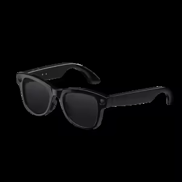

Pourquoi VELA
La technologie qu’on porte ne devrait rien envoyer dans notre dos, ni nous exclure, ni dépendre de personne.
J’ai voulu l’inverse des lunettes qui font passer vos données par le nuage : une IA qui vit sur votre ordinateur, qui garde sa mémoire chez vous, et qui vous laisse vérifier ce qu’elle inscrit. Une première génération, avec ce qui marche et ce qui n’est pas prêt écrits noir sur blanc.
— Miguel Goufack, fondateur de VELA
